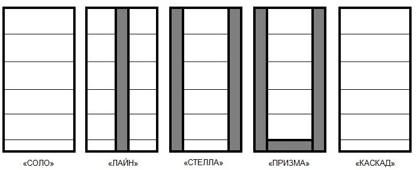
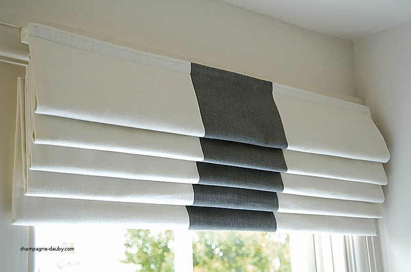
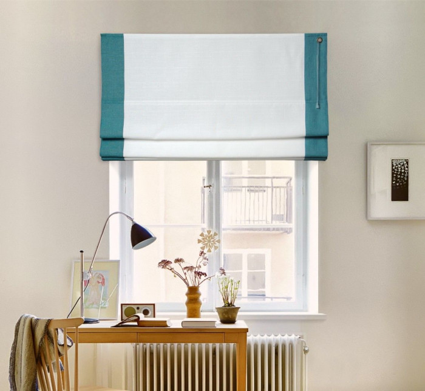
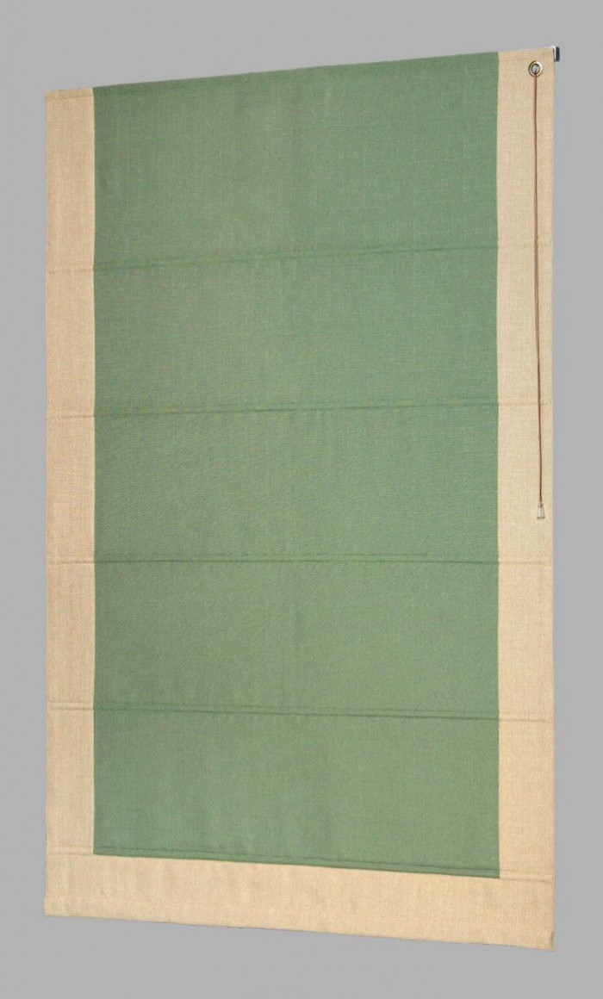
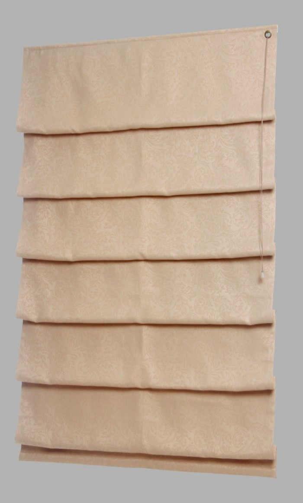

Римскі Штори
Основна відмінна риса римських штор від рулонних - це спосіб їх згортання: римські штори елегантно згортаються вертикально вгору, утворюючи симпатичні складки. Слід зауважити, що в професійному середовищі римські штори часто називають просто "римки".
Види (моделі) римських штор:
Соло - найпростіший і популярний варіант римської штори.Згідно з наведеною вище схемою-картинці, модель Лайн відрізняється від Соло нашивкою смужки тканини по центру.
У моделі Стелла смужки (канти) нашивається з боків.
У моделі Призма додається ще один кант внизу по горизонталі.
Ширина смужок (кантів) в моделях Лайн, Стелла, Призма залежить від ширини римської штори: • при ширині римської штори до 600 мм, ширина канта буде 80 мм • від 600 мм до 1600 мм - ширина канта 100 мм • від 1600 мм до 2400 мм - ширина канта 150 мм Тканина в моделі Соло і у всіх інших моделях крім варіанту Каскад в повністю опущеному стані не містить на собі складок. І лише в моделі Каскад на відміну від всіх інших складки зберігаються і в повністю опущеному (распрямления) стані.
Саме з цієї причини, власники римських штор моделей відмінних від Каскад часто повністю не опускають римську штору, що дозволяє зберегти той затишок, які надає римська штора саме завдяки своїм складкам.
То яку ж модель римських штор краще вибрати?
В даному питанні вам слід керуватися лише своїми смаковими уподобаннями.
Слід зауважити, що згідно з нашою статистикою в більшості замовлень (приблизно в 70% випадків) клієнти вибирають найпростіший варіант Соло.
Варіант Стелла (тобто з смужками по боках) - другий за популярністю серед клієнтів компанії, йому віддають перевагу майже 30% наших клієнтів, які замовили римські штори.
Всі інші варіанти, в т.ч. і Каскад, помітно відстають за популярністю від Соло і Стелли, так що для випадків, коли вам необхідно відзначитися, тобто щоб ваші вироби були не такі як у всіх, вибирайте варіанти відмінні від Соло і Стелла.
Куди і як встановлюються римські штори?
Щоб здатність римських штор створювати затишок розкрилася на повну силу, найчастіше римські шторки встановлюють на весь проріз вікна.
Рідше можна побачити римські штори на кожній стулці (склопакеті) окремо. В такому випадку, щоб уникнути розгойдування шторок на вітрі, а також при відкритті вікна на провітрювання, римські штори додатково укомплектовуються комплектом вертикальних лісок подібно до того, як це робиться з горизонтальними і рулонними жалюзі.
При бажанні римські штори можна також встановити в отвір вікна (тобто до верхнього укосу).
Як самостійно заміряти римські штори?
Замір римських штор залежить від способу їх планованої установки.
При кріпленні на стіну:
Ширина римської штори = ширина віконного прорізу + 200 мм
Висота римської штори = висота від підвіконня до верху віконного отвору + 200 мм.
При кріпленні на вікно (на кожен склопакет):
Ширина римської штори дорівнює відстані між штапиками (по їх стиках з рамою).
Якщо римська штора кріпиться на що відкривається частина вікна (тобто стулку), то висота римської штори = висоті стулки.
Якщо ж римська штора кріпиться на частину вікна, яка не відкривається (т.зв. глуха), то висота римської штори = висота між стиками штапиков з рамою + 30 мм.
При кріпленні в отвір (тобто до верхнього укосу вікна):
Ширина римської штори = ширина отвору мінус 20 мм
Висота римської штори = висота отвору мінус 10 мм
Як управляються римські штори?
Для римських штори, які ви можете замовити в компанії, можливі 2 способи управління на ваш вибір: мотузяне (шнурком) або ланцюговий.
Перший варіант найпростіший і недорогий. В цьому випадку тканина римської штори кріпиться до карнизу подібно до того, який використовується в горизонтальних жалюзі. Саме управління також схоже (з важливою відмінністю у вигляді відсутності поворотною палички) - ви просто тягнете за шнурок, щоб підняти штору. Щоб опустити штори, часто досить потягнути шнурок в сторону. Штора опуститься в цьому випадку сама за рахунок своєї ваги.
Ланцюговий механізм в цілому інтуїтивно зрозумілий і передбачуваний - ви просто тягнете за ланцюжок, щоб підняти або опустити штору.
Зверніться за консультацією до наших спеціалістів по номеру 380678698210.